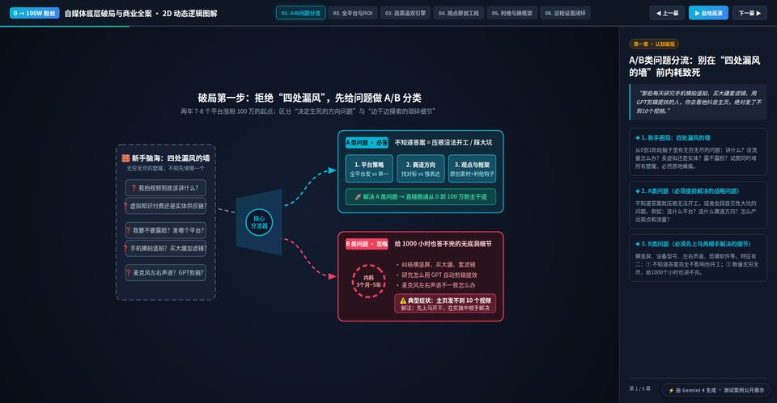
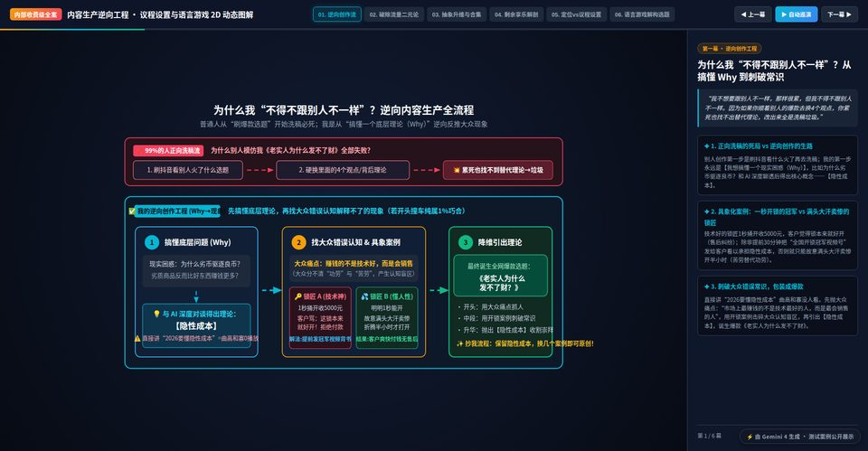
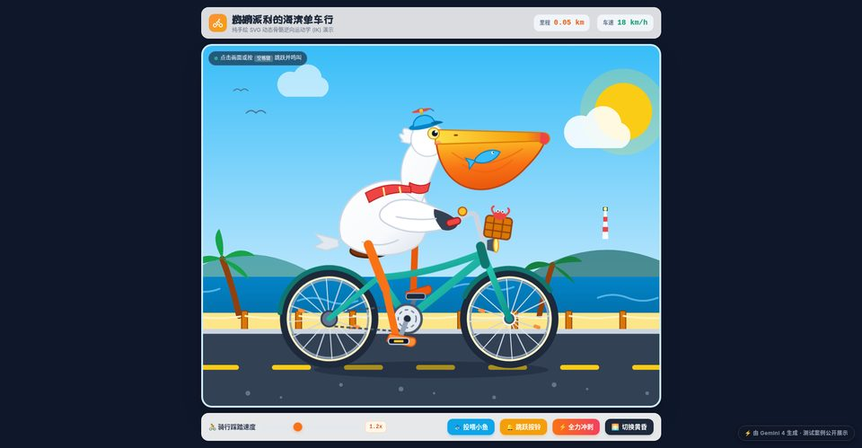
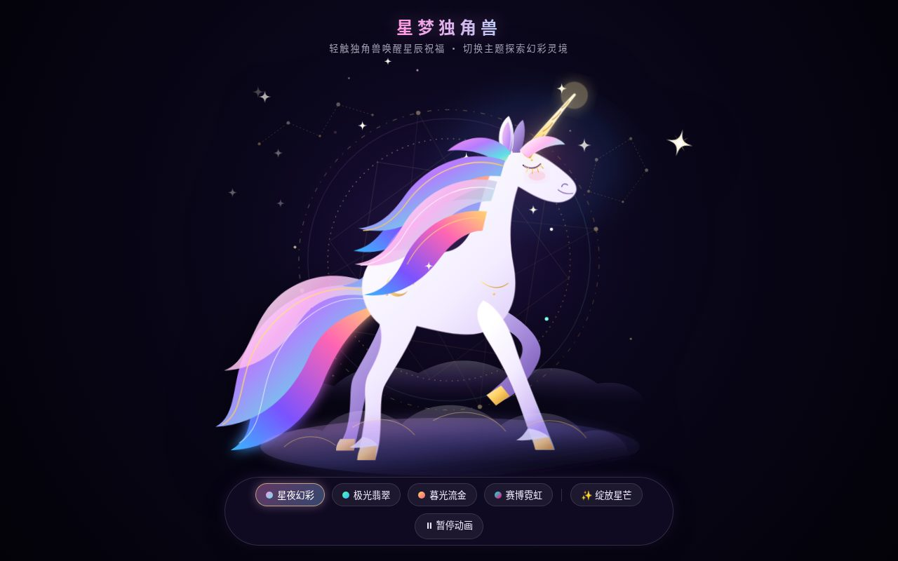
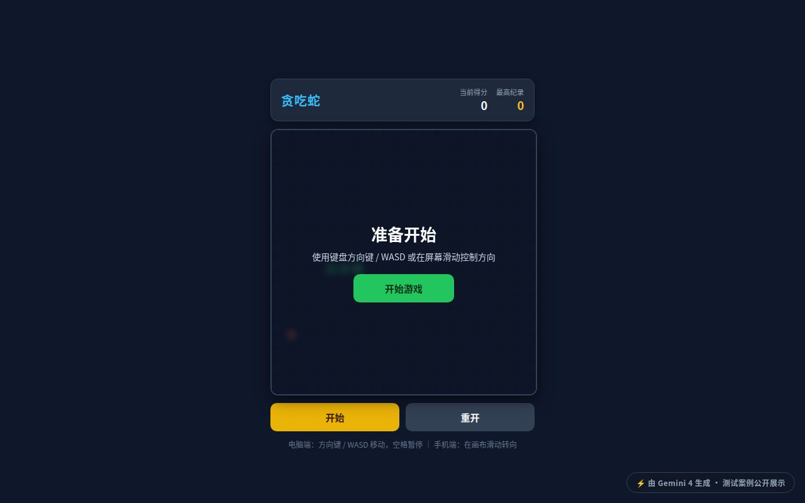
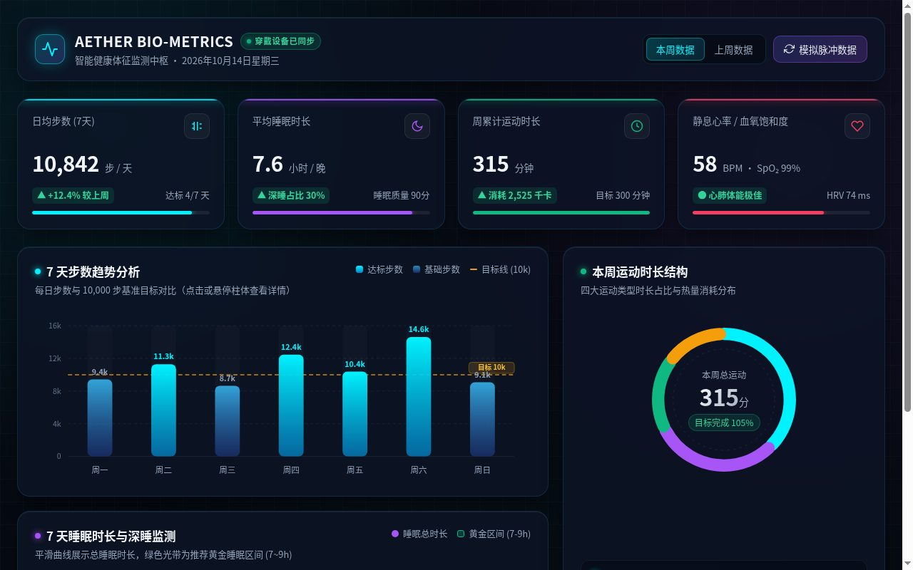
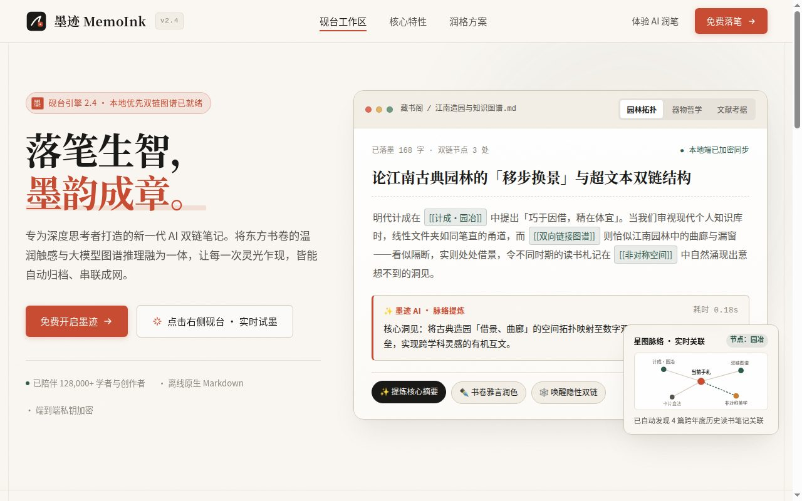

同一类任务，丢给不同的主流模型，看它们一次性能交出什么样的网页。
每个案例均为模型一次生成的单文件 HTML 原样展示，并附上当时使用的提示词。

分幕式交互动画讲解：选题 / 钩子 / 节奏 / 复利。顶部步骤导航切换场景，支持自动巡演与键盘 ← → 切换，纯内联 SVG 动画、零外部依赖。
查看案例 →
同系列第二弹：慢知识生产流程与议程设置的全案动画演示。分场景面板式讲解，同一套视觉语言，验证模型在系列化内容上的一致性。
查看案例 →
一只鹈鹕骑单车的沿海奇遇 SVG 动画故事。注：本页引用了 Tailwind CDN 与 Google Fonts，需联网加载，国内访问可能稍慢。
查看案例 →同一套网页任务，只测浏览器版 Gemini 4。每个案例均为模型原始输出（未修复、未补写），并附完整提示词与真实尝试记录——失败也如实公开。

纯 SVG 手绘独角兽：鎏金角、幻彩鬃毛、星月光环、粒子与浮动闪烁动画，五套主题一键切换，点击触发生成魔法粒子。一次生成成功（38KB），经围栏重发 + 代码块下载取回完整文件。

20×20 网格：计分、localStorage 最高分、开始/暂停/重开、结算面板、键盘 WASD + 触屏滑动、速度递增。前两次被单次输出长度截断，第三次加精简要求后一次成功（12KB）。

深色科技风：4 张数据卡片 + 7 天步数柱状图 + 本周运动时长环形图 + 睡眠监测，全部原生 SVG/JS 手写。前三次因复制提取截断失败，第四次用围栏 + 下载按钮一次成功（46KB）。失败记录如实保留在测试记录中。

导航栏 / hero / 三张特性卡片 / 三档价格 / 页脚 / 微交互（弹窗、Toast）。简洁提示词 + 代码块下载按钮，一次成功（95KB，零外部依赖）。此前"30KB 截断"实为复制提取路径的问题，而非模型输出上限。